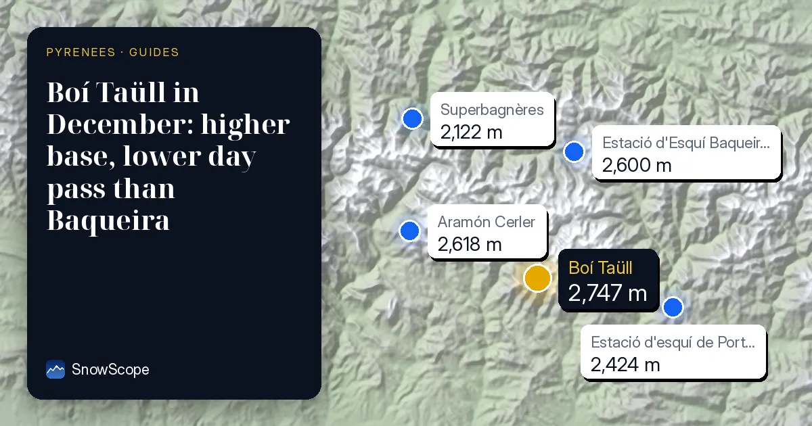

Boí Taüll in December: higher base, lower day pass than Baqueira
For a low-cost December ski trip in Spain, Boí Taüll offers a higher start and a lower day ticket than Baqueira Beret. Its lifts start at 2039 m with a 49.00 EUR adult 1-day pass, versus Baqueira Beret's 1504 m base and 74,00 € day ticket. Even so, early December snow is a gamble, so timing matters.
See the live snow forecast for Boí Taüll in the SnowScope appSnow depth, powder alerts and the 3D map, free.
Starting high at 2039 m
A high base means you are less likely to walk across grass to the first lift, and no resort in our Pyrenees list starts higher. Boí Taüll's mapped ski area runs from 2039 m to 2747 m, with 708 m of vertical, 35 km of runs and 9 lifts. The first lasting snow usually arrives on 9 November at the base, 4 November at mid-mountain (2393 m) and 3 November at the top.
Today's snow estimate on 13 November shows a quiet start: 0 cm at the base and 5 cm at mid-mountain and top, with 0 cm, 4 cm, and 6 cm of new snow over the next 7 days. From 13 to 26 November, the two-week forecast range is 13 to 36 cm at mid-mountain and above, never a promise.

Week-by-week snow odds in December
Across our snow history of 46 past winters (1980-81 to 2025-26), December starts lean. At the 2039 m base, a usual December averages 16 cm (17 cm on 15 December), below 1 cm in a thin winter (1 in 10) and above 52 cm in a deep one. Mid-mountain (2393 m) averages 25 cm (24 cm on 15 December; thin below 3 cm, deep above 71 cm), while the 2747 m top averages 34 cm (32 cm on 15 December; thin below 4 cm, deep above 90 cm).
Week by week, later dates pay off. In 1-7 December, 30 cm or more happens in 15 % of past winters at the base, 35 % at mid-mountain, and 41 % at the top (50 cm or more: 2 %, 11 %, 20 %). In 8-14 December, 30 cm or more hits 24 %, 41 %, and 43 % (50 cm or more: 9 %, 17 %, 30 %). By 15-21 December, those 30 cm or more odds rise to 30 %, 48 %, and 57 % (50 cm or more: 9 %, 22 %, 37 %). In 22-28 December, 30 cm or more reaches 39 %, 54 %, and 63 %, with 50 cm or more in 15 %, 33 %, and 46 %.
What the pass costs
On Boí Taüll's official site, an adult (25-64) 1-day pass is 49.00 EUR. Multi-day passes and lodging were not checked, so use that day rate to plan and check the official site before booking. For 35 km of mapped runs, it keeps lift costs modest.
Against Baqueira Beret
Baqueira Beret is bigger, with 154 km of mapped runs, 36 mapped lifts, and 1096 m of vertical between 1504 m and 2600 m. On its official site for 2026-27, an adult 1-day 'Baqueira Ticket' is 74,00 € (70,00 € with the rechargeable 'Baqueira Pass' card), and a 6-day 'Baqueira Ticket' is 359,00 €. Boí Taüll's 49.00 EUR pass keeps daily costs lower.
On December snow, Boí Taüll's height beats Baqueira Beret at every level. Baqueira Beret's 1504 m base averages 8 cm (9 cm on 15 December; 0 cm in a thin winter, above 37 cm in a deep one), with 30 cm or more in 4 %, 11 %, 15 %, and 20 % across the four December weeks. Its 2052 m mid-mountain averages 20 cm (19 cm on 15 December; thin below 2 cm, deep above 56 cm), with 30 cm or more in 22 %, 30 %, 35 %, and 41 %. At 2600 m, it averages 30 cm (30 cm on 15 December; thin below 3 cm, deep above 77 cm), hitting 30 cm or more in 39 %, 46 %, 52 %, and 59 %, and 50 cm or more in 13 %, 22 %, 30 %, and 37 %.
Last winter and the long view
Last winter's December (2025-26) was thin at Boí Taüll, averaging 9 cm at the base, 14 cm at mid-mountain, and 19 cm at the top. Across our snow history, December ranged from 2016-17 (1 cm at the base, 2 cm at mid-mountain and top) to 2021-22 (67 cm, 94 cm, and 121 cm). Usual winters peak at 77 cm, 109 cm, and 154 cm across 142, 162, and 167 snow days.
Comparing the first 15 winters (1980-81 to 1994-95) with the last 15 winters (2011-12 to 2025-26) shows a small drop in December middle values: 15 cm to 12 cm at the base, 22 cm to 20 cm at mid-mountain, and 30 cm to 28 cm at the top. Early December remains uncertain, so ski high and pick later weeks.
Tips for skiers
- Target 15-21 December or 22-28 December, when the 2747 m top reaches 30 cm or more in 57 % and 63 % of past winters rather than 41 % in 1-7 December.
- Ski between mid-mountain (2393 m) and the top (2747 m), where usual December depths are 25 cm and 34 cm instead of 16 cm at the base.
- Book your 49.00 EUR adult (25-64) 1-day pass on Boí Taüll's official site, and check there for multi-day rates.
- Read the avalanche bulletin each morning before heading off-piste, especially after storms above 2393 m.
More maps (external sites)
References and credits
- Boí Taüll, official lift pass prices (tarifes) pirineu365.cat/boitaull/estacio/tarifes/
- Baqueira Beret, official prices (tarifas), season 26-27 www.baqueira.es/es/tarifas
- SnowScope, December snow at three heights and today's snow map snowscope.app/
About these numbers
Snow numbers: SnowScope snow history, 46 past winters (1980-81 to 2025-26) at three heights of each resort (a model of the past corrected for height: an estimate for an area, not resort measurements); December figures computed from the daily depths of those winters. Snow now and the two-week outlook: SnowScope forecasts (outlook from ECMWF and GFS, a range, not a promise). Lifts and runs: OpenSkiMap mapping. Prices: the official resort pages listed below, read on 2026-11-13; prices can change, check before booking.
Official avalanche bulletins: ICGC – Butlletí de perill d'allaus (Catalunya)
Cite this report
For research, teaching or the press: the numbers and charts are free to reuse under CC BY 4.0 with this citation.
SnowScope (2026), Boí Taüll in December: higher base, lower day pass than Baqueira, https://snowscope.app/blog/en/2026/11/boi-taull-december-ski-highest-pyrenees-base-2026.html, accessed 2026-11-14
SnowScope (Atlas Labs). (2026, November 14). Boí Taüll in December: higher base, lower day pass than Baqueira. SnowScope snow reports. https://snowscope.app/blog/en/2026/11/boi-taull-december-ski-highest-pyrenees-base-2026.html
BibTeX
@misc{snowscope2026boitaulldecemberskihighe,
author = {{SnowScope (Atlas Labs)}},
title = {Boí Taüll in December: higher base, lower day pass than Baqueira},
year = {2026},
month = nov,
howpublished = {\url{https://snowscope.app/blog/en/2026/11/boi-taull-december-ski-highest-pyrenees-base-2026.html}},
note = {Published 2026-11-14 20:01 UTC; accessed 2026-11-14}
}· CC BY 4.0 · Methods, data and tools →
Boí Taüll: snow and temperature by height, this winter vs last (tools) →
Follow Boí Taüll
Free: a message when fresh snow is coming, and the forecast every morning.
More snow reports

How long the Pyrenees stayed white each winter since 2000-01, seen by satellite, and snow depth at 10 long-running stations. Three thin winters in a row ended in 2025-26; this autumn has started normally.

Rain forecast as freezing level climbs to 4080 m; snow measured on 15 November is thin (under 20 cm) at all major Pyrenees resorts.

Freezing level reaches 3590 m across the Pyrenees on 9 November, bringing rain-on-snow to thin upper slopes. Pack waterproof layers and gaiters.